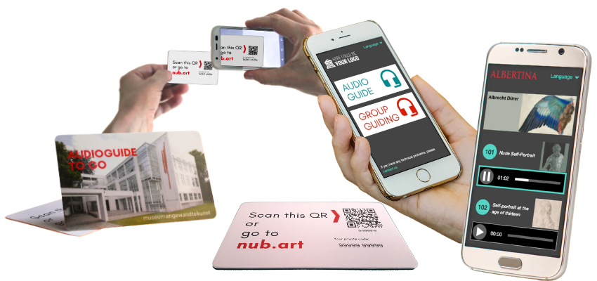

Sperimenta la nostra audioguida
CLICCA SULL'IMMAGINE per vedere come funzionano le nostre audioguide una volta che il codice univoco sulla scheda è stato scansionato o inserito.
In Nubart cerchiamo di semplificare al massimo l'utilizzo e la navigazione. Vogliamo
anche che, chi non è abituato al mondo digitale possa
utilizzare le nostre audioguide in modo intuitivo dal proprio telefono cellulare, senza dover
ricevere istruzioni alla reception del museo. Ecco perché tutto il contenuto appare sulla stessa
pagina, senza link esterni, senza la necessità di utilizzare la tastiera e senza aprire nuove
finestre.